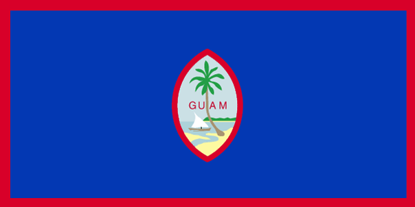

About Guam

Hafa Adai! Is Guam on your travel list? You stumbled onto the right site!
This website contains a wealth of information to help you prepare your visit to Guam. Guam is an unincorporated and territory of the United States. It is located at the easternmost point of the United States just near Japan, Philippines, and New Zealand. The local people of Guam are called Guamanians while the indigenous Guamanians are called Chamorro, who are related to other Austronesian natives. The official languages are English and Chamorro (Guampedia). Guam is a tropical paradise with vibrant sunshine, soft sand beaches, and one of the most diverse marine life on Earth. There are also many historical sites to visit and cultural activities to participate in. There are a ton of local restaurants but you may also be invited to someone's fiesta party filled with chicken kelaguen and barbeque! Enjoy your stay in Guam!
Key Facts
- Area: 544 sq km (210 sq miles)
- Population: 164,229 (2017)
- Capital: Hagatna
- Government: US External Territory (unincorporated)
- Head of State: President Donald Trump since 2017
- Head of Government: Governor Lou Leon Guerrero since 2019 (First female governor of Guam)